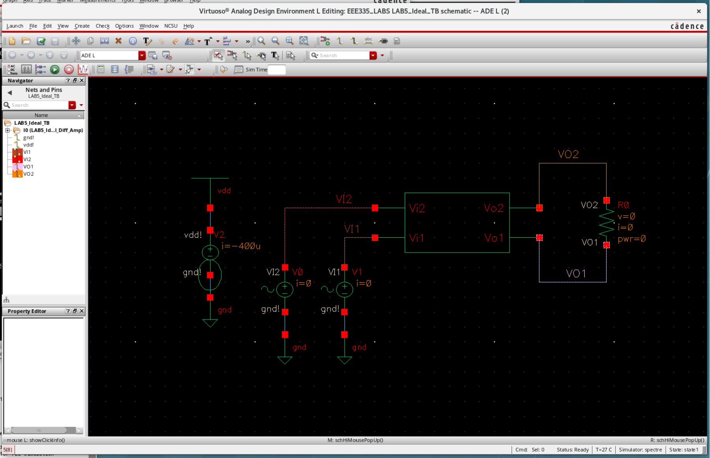
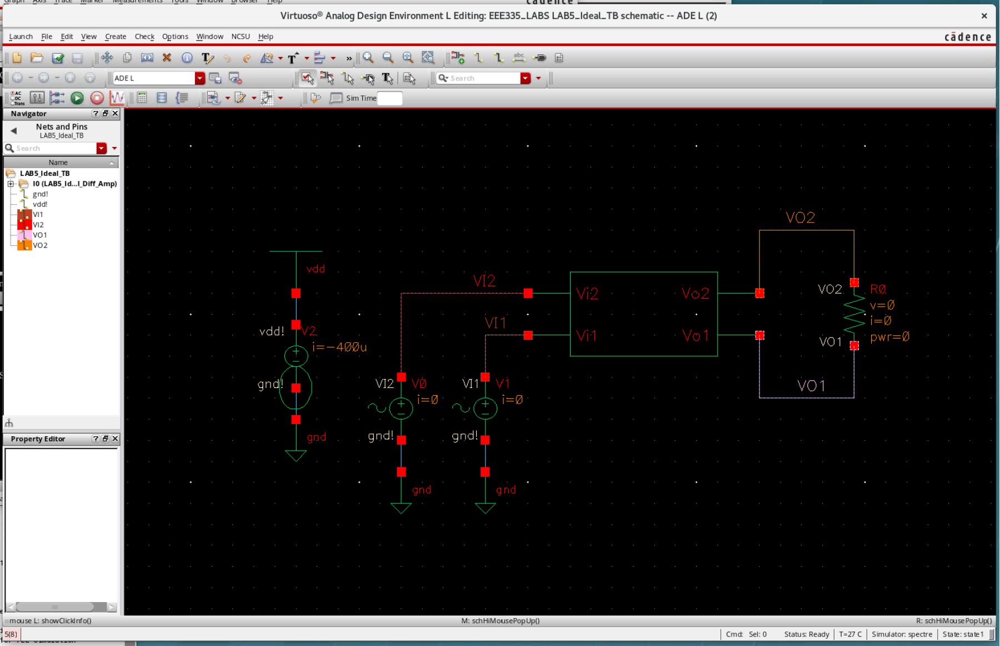

DIFFERENTIAL AMPLIFIER
Analog Microcircuit Design
OBJECTIVE
To design and simulate a differential amplifier with resistive load under two conditions: 1) ideal tail current source and 2) real tail current source using a current mirror. Both designs must meet given parameters.
PROCESS
Both designs were iteratively achieved by repeating steps until meeting target parameters (VDD, Gain, Supply Current). Hand calculations were performed initially to determine DC and AC parameters, followed by the use of Cadence for finalizing and conducting DC, AC, and Transient simulations.
RESULTS
The simulated amplifier closely matches design specifications, with VDD at 2.5 V, Gain surpassing the minimum by 0.23 dB, and the Supply Current staying 0.1 to 0.4 mA below the specified maximum.